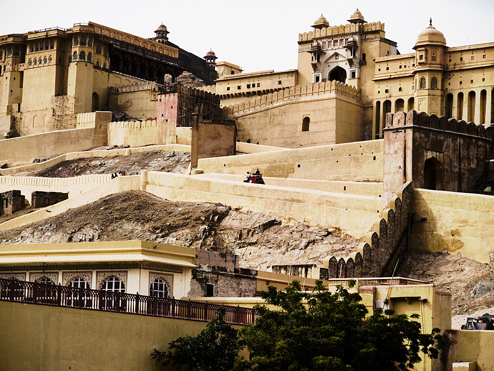

23 jours / 21 nuits

Soyez éblouis par le spectre de tout ce que l'Inde a à offrir dans ce voyage somptueux au coeur du sous-continent, carrefour
culturel et historique qui pemet de découvrir un métissage unique de civilisations millénaires où le temps est suspendu.
L'inde est résolumént entrée dans le 21e siècle sans jamais renier son patrimoine imposant. Le tout offre une destination
unique au monde d'où vous reviendrez transformés.
Mumbai • Udaipur • Jodhpur • Jaisalmer • Jaipur • Chennai • Pondicherry • Kolkota • Kahujaro • Varanasi • Agra • New Delhi
Inclusions
- Vols internationaux au départ de Montréal, Québec ou Ottawa avec Swiss
- Vols Mumbai-Udaipur et Jaipur-Chennai-Kolkota-Kahujaro avec Jet Airways
- Hébergement dans de luxe 5 étoiles
- Transport local en autocar de luxe
- Visites avec guides francophones selon l'itinéraire
- 2 repas par jour